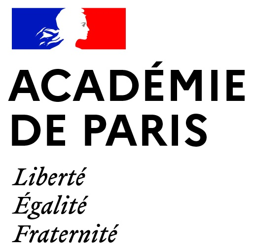
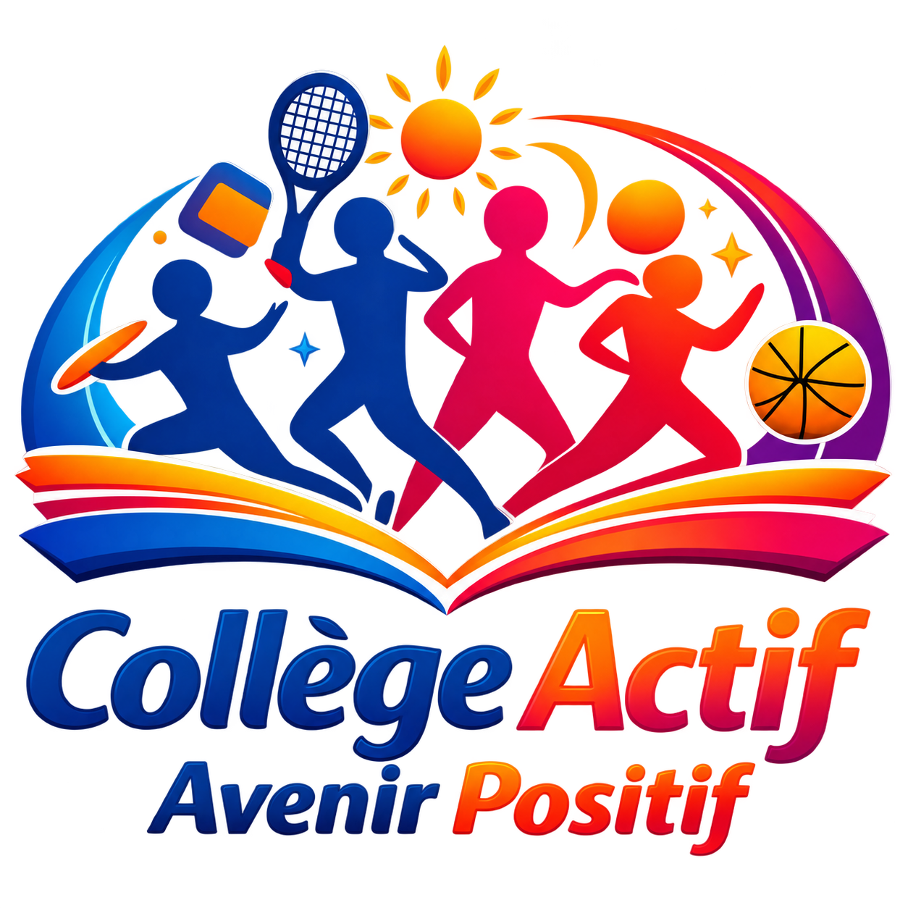

Restez à votre place. Aucun matériel nécessaire.
5 minutes de mouvement. La classe peut reprendre le cours.
PAUSE 5' propose des pauses actives de cinq minutes, simples et ludiques, pour mettre les élèves en mouvement au cours de la journée scolaire.
Conçu pour être utilisé directement en classe, l’outil ne nécessite ni matériel ni préparation particulière : l’enseignant(e) choisit le besoin du moment, lance la pause et les élèves suivent la démonstration projetée.
L’objectif est de favoriser l’activité physique, l’attention, le bien-être et un climat de classe propice aux apprentissages.
• Rompre le temps sédentaire et interrompre les périodes prolongées en position assise.
• Mettre les élèves en mouvement régulièrement au cours de la journée.
• Favoriser l’attention et la disponibilité cognitive pour revenir plus facilement dans la tâche.
• Contribuer au bien-être, à l’engagement et à un climat propice aux apprentissages.
Dispositif « Collège Actif - Avenir Positif » piloté par Bruno Trehet, IA-IPR EPS de l’académie de Paris.
Cet outil a été conçu et réalisé par Sophie Cheyrou, professeur d’EPS (Académie de Paris)